География деятельности: город Краснодар и Краснодарский край, с охватом регионов, где ведется активное строительство.
Сфера деятельности: строительство жилой и коммерческой недвижимости.
На момент старта сотрудничества сайт компании демонстрировал негативную динамику: наблюдалась просадка позиций в поисковой выдаче и снижение органического трафика. Требовалось не только остановить падение, но и вывести ресурс на принципиально новый уровень видимости.
02
Задачи проекта
Перед нами стоял комплекс задач, разделенных на стратегические и тактические направления:
Стратегические задачи:
укрепить позиции сайта в поисковой выдаче, выведя максимальное количество целевых запросов в ТОП-3 по приоритетным направлениям;
увеличить поисковый трафик, остановив просадку и обеспечив стабильный рост органических визитов.
Тактические задачи:
расширить структуру сайта за счет создания новых посадочных страниц под новые ЖК;
улучшить юзабилити и дизайн для повышения удобства пользования сайтом;
провести техническую оптимизацию для устранения ошибок, влияющих на индексацию и ранжирование;
актуализировать контент на страницах;
обеспечить регулярную техподдержку и мониторинг работоспособности сайта и форм обратной связи.
03
Объем выполненных работ
Работы велись комплексно и системно. Ниже представлен полный перечень мероприятий, реализованных в рамках проекта.
Техническая оптимизация:
проведен глубокий технический аудит сайта;
составлен план продвижения с учетом приоритетных направлений;
устранены ошибки ответа сервера;
проведен анализ и оптимизация индексации страниц;
настроена адаптивность под мобильные устройства;
улучшена скорость загрузки страниц.
Внутренняя оптимизация и контент:
собрано и актуализировано семантическое ядро;
настроены мета-теги для квартир;
составлены и внедрены мета теги на сайте для ЖК и служебных страниц;
проанализированы заголовки Н1-Н6 на сайте, внедрены изменения;
контроль опубликованных новостей и статей в блоге;
проведение перелинковки;
улучшен дизайн и повышено юзабилити;
обеспечен контроль работоспособности всех форм обратной связи.
Мониторинг и аналитика:
ежедневный мониторинг позиций по целевым запросам;
контроль доступности и стабильности работы сайта;
анализ индексации страниц;
контроль ответа сервера;
постоянный анализ действий конкурентов;
отслеживание ответов сервера и технических ошибок.
04
Динамика посещаемости и эффективность продвижения
Трафик
Работа над проектом велась методично, без рывков, с акцентом на качественные изменения.
Были проведены доработки дизайна и адаптивности сайта, что положительно сказалось на поведенческих факторах.
В результате комплексных доработок:
сайт начал стабильно получать больше органического трафика;
увеличилось количество поисковых фраз, по которым пользователи переходят на сайт.
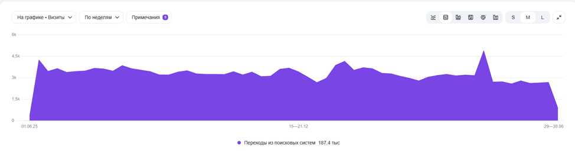
Визиты
Основная доля визитов на сайт формируется за счет поисковых систем, что подтверждает правильность выбранной стратегии SEO-продвижения.
Распределение трафика показывает, что качественная работа над внутренней и внешней оптимизацией дает устойчивый результат в виде целевых посетителей, заинтересованных в услугах компании.
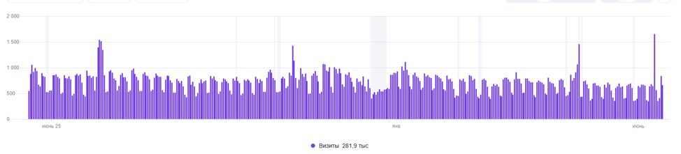
Позиции в поисковой выдаче
После проведения оптимизационных работ позиции сайта заметно выросли и закрепились в выдаче. Важно отметить, что достичь такого результата можно только при регулярной и системной работе — разовые действия не дают долгосрочного эффекта.
На скриншотах ниже представлена динамика позиций с учетом приоритетов, которые были определены на этапе стратегического планирования.
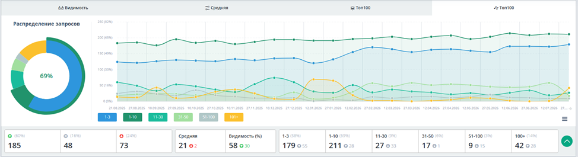
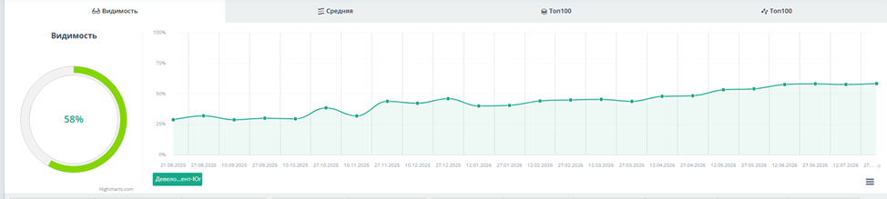
Пример запросов, вошедших в ТОП-3
Ниже представлена выборка запросов по услугам и направлениям, которым удалось закрепиться в тройке лидеров поисковой выдачи.
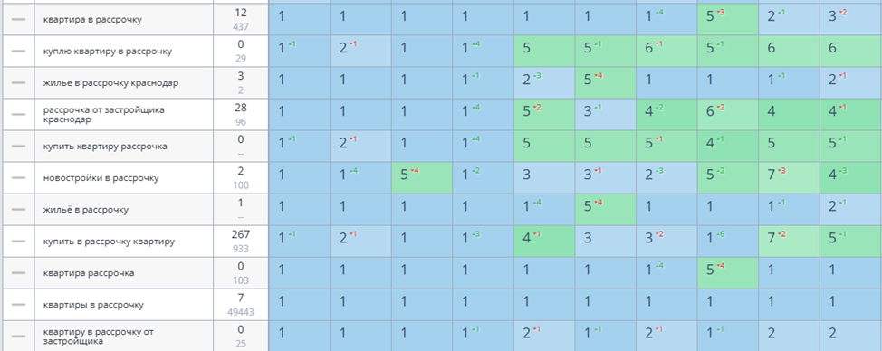
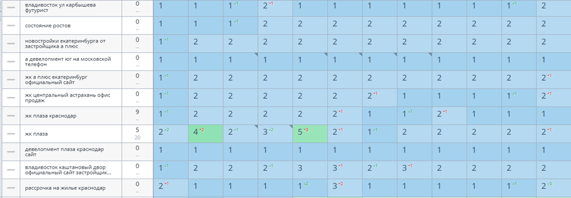
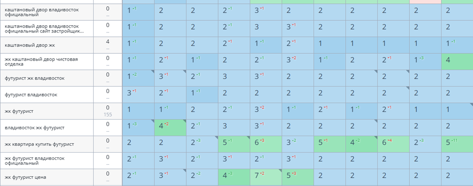
05
Контроль поисковой выдачи
Запрос «рассрочка на квартиру от застройщика краснодар» ТОП-1
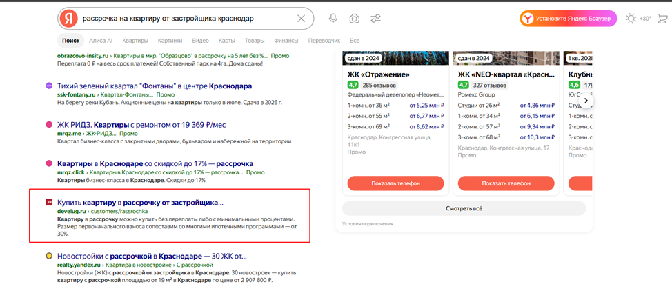
Запрос «квартира в рассрочку от застройщика» ТОП-1
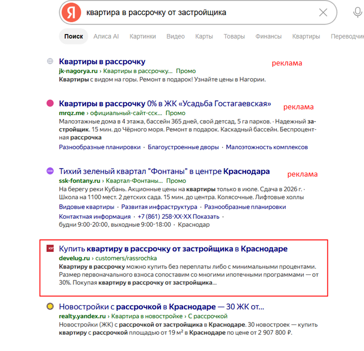
Запрос «жк погода квартиры» ТОП-1
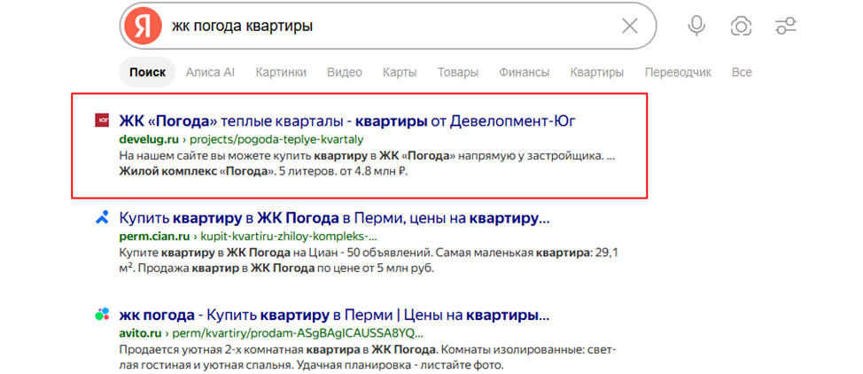
Запрос «ипотека от застройщика ростов» ТОП-2
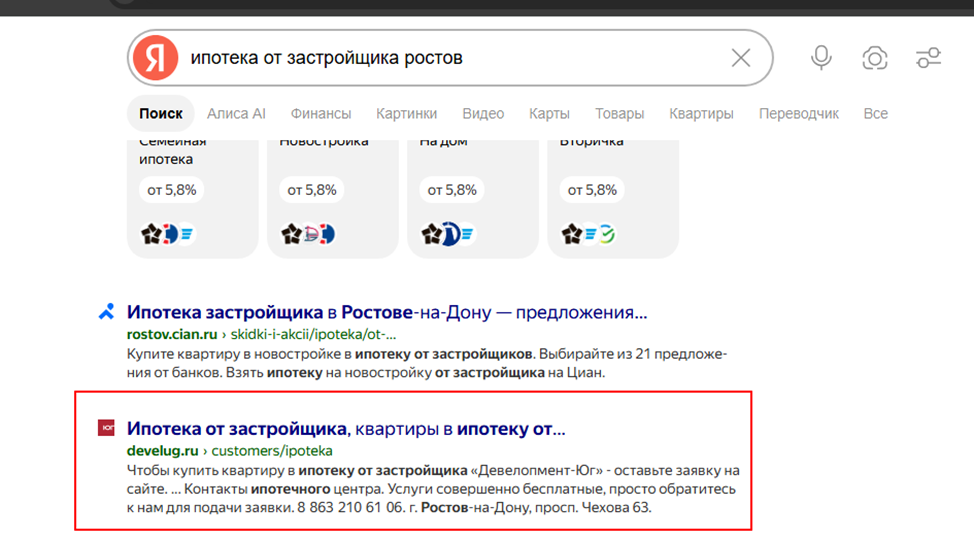
Запрос «спортивная деревня» ТОП-2
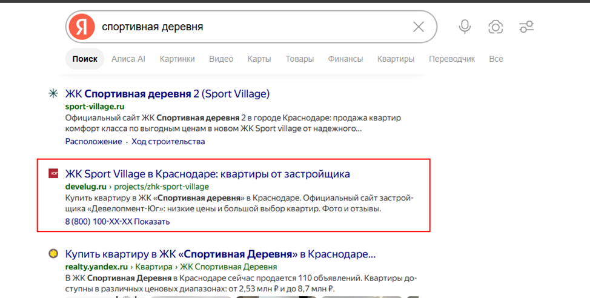
06
Итоги и результаты сотрудничества
В ходе реализации проекта был выполнен полный цикл работ.
Во-первых, проведен технический аудит сайта с составлением детального плана продвижения, учитывающего приоритеты.
Во-вторых, проводился постоянный мониторинг позиций сайта и внедрение доработок, которые помогали сайту получать позиции.
В-третьих, с учетом постоянных обновлений алгоритмов поисковых системы работы по улучшению сайта велись непрерывно, что обеспечило устойчивость достигнутых позиций. Улучшение юзабилити и дизайна позитивно сказывается на поведенческих факторах и, как следствие, на ранжировании.
Подводя итог можно сказать, что работа над проведением ведется непрерывно и с оперативным реагированием на изменения алгоритма, что в свою очередь принесло устойчивый трафик и позиции.
Галерея проекта
тяни
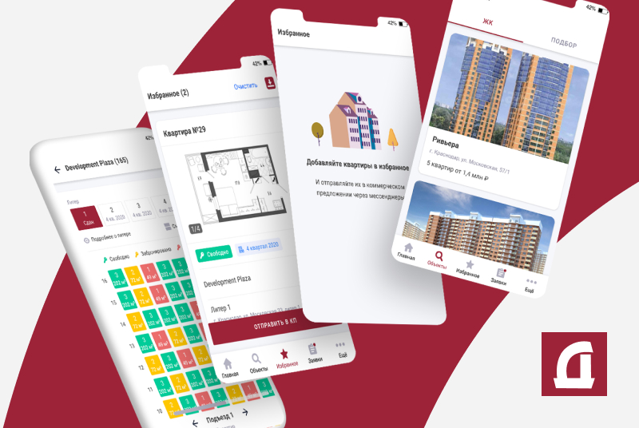
От имени Группы «Черкизово» хотим поблагодарить коллектив Nuts Digital Agency за работу над созданием карьерного портала нашей компании. Специалисты агентства продемонстрировали высокий уровень профессиональной подготовки и способность эффективно решать задачи в рамках установленных сроков.
Семенова СофияРуководитель направления бренда работодателя Группы «Черкизово»Следующий кейс →